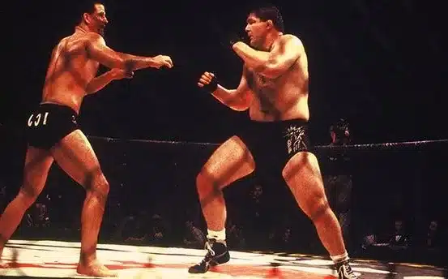

Orígenes y evolución
Aunque la MMA moderna se popularizó en 1993 con la creación de la UFC, sus raíces se remontan al pankration de la Antigua Grecia y a los Vale-Tudo brasileños del siglo XX. Con el tiempo evolucionó hasta convertirse en un deporte regulado con divisiones de peso, árbitros y millones de seguidores en todo el planeta.